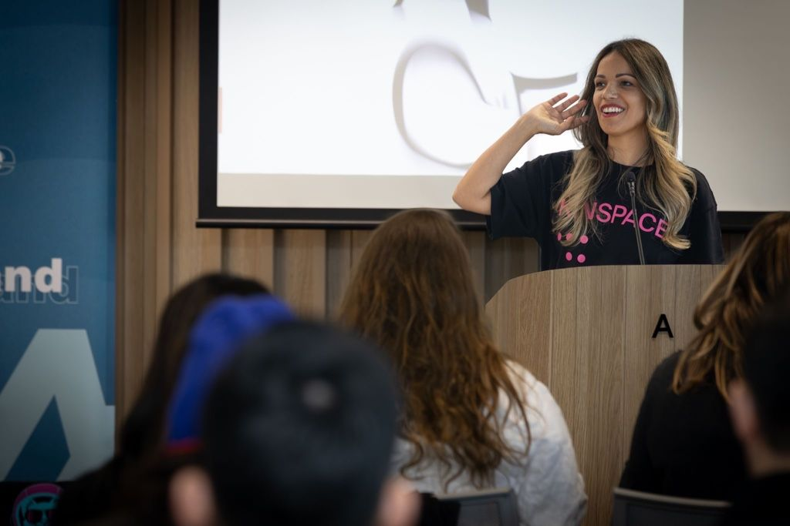

What changes when the people most impacted are in the room.
Universal design, power dynamics, and the technology that surfaces what's been invisible. When the people most impacted are in the room, you build better, reach further, and find the markets that were always there.
A decade of doing this inside Fortune 500 companies, UN agencies, and global financial services — and from the outside of systems that weren't designed for her.
"You're the first speaker to break technology down into simple, relatable ways. Every other speaker focused on the tech. You focused on the stories that make it easy to relate to."Audience member, technology conference
"She has a gift for taking complex ideas — neurodivergent design, VR for inclusive leadership, power dynamics — and making them accessible and actionable for a broad audience. Across every engagement, the feedback was exceptional."Karen Cohen, Founder, Emerging Tech Hub and WiET

Sara opens conversations most organisations don't know how to start. The feedback — across every engagement — has been exceptional. People leave wanting to do something, not just think something.
"I was surprised by the vulnerability demonstrated by the participants and facilitators."C-suite executive, Tier 1 investment management firm
"I realised I've never felt ignored."CFO, global investment firm — immersive VR leadership session with Sara
Universal design and accessibility
The business case for building for the edges first. Better products, new markets, and the talent your current systems screen out before you meet them. What it looks like in practice — across technology, leadership, and product design.
Power dynamics and who's in the room
The questions most organisations avoid: who's making the decisions, who's affected by them, and who's missing from the conversation entirely. Rights-based intelligence applied to leadership, product, and organisational design — and what changes when you ask them.
Co-designing with lived experience
What changes when the person closest to the problem is in the room as a co-designer and authority, not a research subject. The methodology behind Mogo, bébé bloom, and Bublii — and what it produces that conventional design processes miss.
"In a 25-minute demo, executives experienced VR and storytelling and said: 'You've brought the theory to life. We now know the power of immersive.'"Kirsty Hagen, co-lead of immersive leadership programs across Australia, Europe and the US
Deep technical credibility. Lived experience. A genuine commitment to making space for people who are too often left out of the room.
Sara speaks from inside the work — not about it. She has deep technical credibility alongside the lived experience of building in systems that weren't designed for her. She pushed WiET to address diversity imbalance on panels and speaking programs across the emerging tech ecosystem, not just gender — and she modelled what that change looks like by showing up herself.
She builds for the edges first. When it works for the person hardest to reach, it works better for everyone.
At the Algorand DApp Hackathon — almost entirely coders and technical founders — Sara entered as the first non-coder and built a fully functioning decentralised application in six weeks. She then joined Algorand panels to advocate for bringing women and minority groups into Web3. What that moment said to the Queensland tech community: the people who understand the human problem are just as essential as those who write the code.
"What struck me immediately was the combination: deep technical credibility, lived experience as a neurodivergent founder, and a genuine commitment to making space for people who are too often left out of the room. She builds for it."Karen Cohen, Founder, Emerging Tech Hub and WiET
"One of the most meaningful things Sara did was push our community to address the diversity imbalance on panels and speaking programs — not just gender. She made me think about neurodiversity and how different people should be at the front of the room. She modelled what it looked like to change it, and backed her advocacy with her own time."Karen Cohen, Founder, Emerging Tech Hub and WiET
Past stages
- WiET — Women in Emerging Technology, keynote across Queensland and Victoria
- Emerging Tech Hub and ACS, keynote
- Algorand — keynote speaker, panellist, and first non-coder
- GitLab — shifting power dynamics through active listening
- ABC — Virtual Reality and inclusive leadership
- Diversity and Inclusion Research Conference — co-design and immersive technologies
- Rare Birds — mentor, presenter, and community contributor
Formats
- Keynote — 30 to 60 minutes, tailored to your audience, theme, and brief
- Panel — keynote speaker, moderator, or panellist
- Workshop facilitation — half day or full day, immersive and interactive
- Immersive leadership sessions — with VR where available
Audiences
- Technology and innovation ecosystems
- Enterprise leadership teams
- Diversity, equity and inclusion conferences
- Women in technology and STEM communities
- Emerging technology and Web3 communities
- Founder and entrepreneurship programs
How Sara works with your event
- Pre-event briefing to understand your audience, context, and what you need the room to leave with
- Content tailored to your theme — Sara doesn't deliver a fixed set
- Available for pre-event panels, post-event Q&A, and extended workshop formats
- Speaker kit and bio available on request
"Sara has taught me to question communication from the lens of neurodiversity — to think about how the message will be received. Do we need subtitles, do we need to slow down, do we need to check in with people before an event on their needs. These are key changes to the way we run events. For me this has been life-changing advice."Karen Cohen, Founder, Emerging Tech Hub and WiET
"Sara Liyanage-Denney is doing exactly that — reshaping what the technology sector looks like and who gets to be part of it. From Queensland, for the world. She has my strongest recommendation."Karen Cohen, Founder, Emerging Tech Hub and WiET
Sara Liyanage-Denney is the founder of KINSPACE and a keynote speaker on universal design, power dynamics, and emerging technology. She has a decade of work inside Fortune 500 companies, UN agencies, and multinationals — and builds ventures with people who've been excluded from the rooms their products end up in. She's neurodivergent, technically credible, and speaks from inside the work. She was the first non-coder to lead a project at the Algorand DApp Hackathon, building a fully functioning decentralised application in six weeks. Based on Gubbi Gubbi Country, Queensland. Available across Australia and internationally.
Copy this bio for event programmes. High-res headshot and speaker photo available on request.
Available for events across Queensland, Victoria, New South Wales, and nationally.
Available for international engagements — Asia Pacific, North America, Europe, and UK. Previous engagements across the Asia Pacific region and with global organisations.
Available for virtual keynotes, panels, and workshop facilitation globally.
How do I book Sara for an event?
What formats are available?
Does Sara speak internationally?
Book Sara for your event.
Keynotes, panels, and workshop facilitation across Australia and internationally. Sara works with your brief — get in touch with your event details, theme, and audience and she'll come back to you directly.